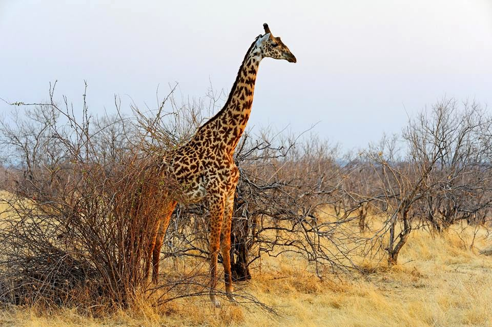

contact me pinchkiller@gmail.com
my partner tanzania tourst board also see tanzania safari chanell
About sixty years ago the first President of the United Republic of Tanzania, the late Mwalimu Julius K. Nyerere, recognized the integral part wildlife plays in this country. In September 1961 at a symposium on the Conservation of Nature and Natural Resources, he gave a speech that laid the foundation for conservation in post-independent Tanzania. The extract of that speech has become known as the Arusha Manifesto. “The survival of our wildlife is a matter of grave concern to all of us in Africa. These wild creatures amid the wild places they inhabit are not only important as a source of wonder and inspiration but are an integral part of our natural resources and our future livelihood and well being. In accepting the trusteeship of our wildlife, we solemnly declare that we will do everything in our power to make sure that our children’s grandchildren will be able to enjoy this rich and precious inheritance. The conservation of wildlife and wild places calls for specialist knowledge, trained manpower, and money and we look to other nations to co-operate with us in this important task - the success or failure of which not only affects the continent of Africa but the rest of the world as well.”
The Tanganyika National Parks Ordinance CAP [412] of 1959 established the organization now known as Tanzania National Parks (TANAPA), and Serengeti became the first National Park. Currently, TANAPA is governed by the National Parks Act Chapter 282 of the 2002 revised edition of the Laws of the United Republic of Tanzania. Conservation in Tanzania is governed by the Wildlife Conservation Act of 1974, which allows the Government to establish protected areas and outlines how they are organized and managed. National Parks represent the highest level of resource protection that can be provided. By September 2019, TANAPA has grown to 22 national parks, covering approximately 99,306.5 square Kilometers
Sustainable Conservation of national parks is the core business of the organization. Nature-based or wildlife tourism is the main source of income that is ploughed back for management, regulation and fulfillment of organizational mandates.
To manage and regulate the use of areas designated as National Parks by such means and measures to preserve the country’s heritage, encompassing natural and cultural resources, both tangible and intangible resource values, including the fauna and flora, wildlife habitat, natural processes, wilderness quality and scenery therein and to provide for human benefit and enjoyment of the same in such manner and by such means as will leave them unimpaired for future generations.
Being a parastatal organization, TANAPA is governed by a number of instruments including the National Parks Act, Chapter 282 of the 2002 (Revised Edition) and the Wildlife Conservation Act No. 5 of 2009. Others are the National Policies for National Parks in Tanzania (reviewed in 2013), the five year Medium Term Strategic Plan (MTSP), parks’ specific General Management Plans (GMPs), the Development and Lease Agreement Procedures (DALP), as well as other relevant national laws and policies.
The primary role of Tanzania National Parks is conservation. The 22 national parks, many of which form the core of a much larger protected ecosystem, have been set aside to preserve the country’s rich natural heritage and to provide secure breeding grounds where its fauna and flora can thrive, safe from the conflicting interests of a growing human population.
TANAPA is particularly charged with functions of:
It is the responsibility of TANAPA to ensure security and safety of visitors, park inhabitants, wildlife and park infrastructures. Although security is the responsibility of every park inhabitant, the Organization has rangers who are directly responsible for this. To ensure that rangers are equipped with the right skills to execute their duties, different kinds of training are conducted and equipment procured to ease their tasks. Training focuses on wildlife protection, strategic field patrol methods, intelligence gathering operations and use of modern intelligence and security equipment.
The National Parks are endowed with rich and diverse habitats and ecosystems which support diverse wildlife populations. Regular monitoring of these systems is done in order to have an early warning of future scenarios. Weather parameters are monitored in all the parks throughout the year. Wildlife censuses are carried out in the parks regularly to establish population sizes, trends and distribution. Regular environmental audits are conducted for visitors’ facilities and recommendations suggested to rectify the anomalies observed All development projects undertaken in the parks are subject to Environmental Impact Assessment (EIA) studies. Wildlife health in all the national parks is closely monitored. Inventory, mapping and eradication of invasive exotic species is conducted in affected parks. Early burning is conducted to mitigate the impact of dry season hot fires and to preserve forage for herbivores for the dry season. This is achieved through the mosaic of burned and unburned patches created by the early burning fires. Wildlife related research in the national parks is encouraged in collaboration with the Tanzania Wildlife Research Institute (TAWIRI).
TANAPA values the role played by the community towards conservation, therefore different approaches are adopted to provide conservation education to various conservation stakeholders. Also the organization extends financial support to communities bordering national parks for implementation of community development projects through Support for Community Initiated Projects (SCIP). These projects focus on education, health, transportation and water supply. Another project called Tanapa Income Generating Project (TIGP) has been launched. The aim is to effectively contribute to poverty alleviation for the communities living around the national parks, while gaining their support for conservation.
The Organization appreciates the role played by sister institutions in the Ministry of Natural Resources and Tourism and others in helping it to achieve its mandate. In reciprocation of the good spirit and efforts, TANAPA extends required support to such institutions. Some of these institutions are the College of African Wildlife Management (MWEKA), Pasiansi Wildlife Training College, Tanzania Wildlife Research Institute (TAWIRI) and Tanzania Tourist Board (TTB).
The Organization continues to embrace tourism as its main source of revenue for its operations. For that reason, TANAPA continues to ensure that more tourism products and activities are developed and promoted to diversify the tourism experience in the parks. Analysis indicates that newly developed tourist activities have a significant contribution towards park value and enhancing visitor experience and satisfaction.
As one of the marketing strategies the Organization in collaboration with other stakeholders continues to aggressively promote the country’s tourist attractions both locally and internationally.
In order to promote domestic tourism, TANAPA continues to build affordable accommodation facilities in the parks and encourages the private sector to invest in the provision of logistic services targeting the local market. Improvement of tourist facilities in the parks and their surroundings is as well emphasized.
contact me pinchkiller@gmail.com
my partner tanzania tourst board also see tanzania safari chanell